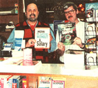

BITS AND PIECES
Where to get directions for anything BY MALARA P. BRAGG
When Bob Wiley was interviewed by a French television station about 10 years ago, he didn't think anything of it. But within the next year, two people who had seen the broadcast traveled separately from France to Philadelphia and visited his unique How-To-Do-It Book Shop. Packed with thousands of books on almost every imaginable topic, all the books share one thing-they explain, instruct, describe, demonstrate, and detail. They reveal just how to do almost anything you might want to do.
Celebrating the store's 30th year this November, owners Wiley and Steve Maurer are making it easier for "do-it-yourself" types to get in touch with valuable resources. Thanks to a recent mail order catalog, readers need not travel from France to center city Philadelphia when they can wait for a package of books to arrive at their rural route or P .O. Box.
Founded in 1967 by Betty and Herb Shugar, the store has long recognized an important market. Betty herself was an original "do-if-yourselfer" and could never find the information she wanted. Today, the store's core group of customers are people in their 40s and 50s who have a situation-whether it be a relationship or a roof-and need to deal with it, Maurer says. They are beyond the question of why; they need a how-to explanation.
"We have a saying that if we can sell somebody The New Complete Do-It-Yourself Manual (Reader's Digest), we have them for life," Maurer says. "When somebody realizes they can fix a drain, they can handle life."
Books range from general topics like home repair to more specialized areas, like earthworm farming. "We have books on subjects I didn't even know existed," Maurer says. Customers teach Maurer and Wiley about up and coming topics so when the how-to books hit the market, they know what to buy.
Wiley started working part-time at the book shop 25 years ago as a college student studying English literature. Yet the store carries no fiction, Wiley notes, or any best sellers either. "We have to make our own best sellers," he says. According to Maurer, Wiley was successful when he took over the book shop from the Shugars in 1984 because he took chances, ordered new books, and listened to customer cues.
"When you get five calls on a topic, it lets you know something is happening," Maurer says. After tracking down a book on a kind of knitting native to the Faroe Islands (a Danish county in the north Atlantic) Maurer knew exactly what to tell the second person who called in search of a good how-to book on the subject.
Maurer, who started out as a customer at the original How-To-Do-It Book Shop before coming to work at the store three years ago, says customers keep in contact with them. One, after moving to Colorado from Philadelphia, called the book shop to order all six books in stock, sight unseen, on how to build your own kayak. Maurer says they get an average of one call a week from a past customer.
Reader's Digest also has been known to rely on the How-To-Do-It Book Shop. When researching a how-to needle work book Reader's Digest intended to publish, a representative from New York visited the How-To-Do-It Book Shop and bought every related book in stock.
Still holding their own against big chain bookstores, Wiley says he sees a growing mail order catalog business in the book shop's future. The store also publishes a newsletter and sponsors book signings. Because of the how-to focus of all the books, signings sometimes also feature demonstrations.
Wiley and Maurer can be reached Monday through Friday 9:30 to 5:30 and Saturday 10:30 to 5 at (215) 563-1516. Or call toll-free 1-888-U-Do-It-22 (1-888-836-4822) to place an order or receive a free catalog, or visit the store at 1608 Sansom Street, Philadelphia, PA, 19103.
Home & Garden
Build a Classic Timber-Framed House-Jack A. Sobon (Garden Way) Carrots Love Tomatoes: Secrets of Companion Planting for Successful Gardening-Louise Riotte (Garden Way)
Country Living
The Rammed Earth House-David Easton (Chelsea Green)* Raising Poultry Successfully-Will Graves (Williamson) Folk Remedies That Work-Joan and Lydia Wilen (Harper Collins) Four-Season Harvest: How to Harvest Fresh, Organic Vegetables From Your Home Garden All Year Long-Eliot Coleman (Chelsea Green)* Chilton's Small Engine Repair (13 to 20 H.P.) ) and (2 to 12 H.P. ) (Chilton) Polish Your Furniture with Panty Hose-Joey Green (Hyperion)
Crafts
Tool Making for Woodworkers-Ray Larsen (Cambium) How to Make Felt: Create Hats, Bags, Rugs, Masks, and Much More-Anne Belgrave (Search Press)
Animals
Outwitting Squirrels-Bill Adler, Jr. (Chicago Review Press) Dr. Pitcairn's Complete Guide to Natural Health for Dogs and Cats-Richard H. Pitcairn, D.V. M., Ph.D., and Susan Hubble Pitcairn (Rodale)
Food & Entertainment
How to Repair Food-Mariana & John Bear (Ten Speed Press)
*You can order The Rammed Earth House by David Easton (#MWB234) and Four Season Harvest by Eliot Coleman (#MEB140) through MOTHER'S bookshelf by calling 1-800-888-9098.
|
 |
|
|